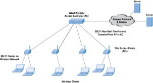

tipologie di rete
| immagine | nome | descrizione | vantaggi e svantaggi |
|---|---|---|---|
 |
punto punto | Una rete si definsce punto quando tutti i device collegati alla rete hanno un cavo per ogni nodo della rete. ogni computer o device può parlare direttamente con tutte direttamente gli altri computer | Vantaggi:1.) In caso di un guasto su un cavo tutti gli altri computer possono parlarsi.2.) Ogni computer può parlare scon altro in un solo passo. Svantaggi:1.) Se la rete diventa grande il costo diventa enorme.2.) I cmputer che possono participare a questa rete sono speciali, cioè gestire tante schede di rete |
 |
Stella | una rete a stella è quella rete che ha al centro un nodo responsabile di far parlare tutti gli altri nodi della rete. | Vantaggi:1.) è una rete semplice2.) è adatta a tutti i normali computer. 3.) è facile aggiungere nuovi elementi alla rete Svantaggi:1.) Questa rete ha un singolo punto di fallimento, (spof) se si rompe il nodo centrale nessuno piu riesce a communicare2.) Il numero di nodi della rete dipende dalla caratteristiche del nodo centrale 3.) L'uso di un app è pericoloso perchè consente a uno degli altri nodi collegati di leggere i messaggi scambiati |
 |
Anello | Una rete ad anello è quella rete in cui ogni nodo è collegato a due altri nodi normalmente questa rete ha una verso di comunicazione | Vantaggi:1.) è facilmente espandibile2.) è una rete semplice svantaggi:1.) se si rompe un cavo o un nodo tutta la rete è bloccata2.) per poter usare la rete bisogna aspettare il proprio turno |
 |
Bus | Una rete ad bus è quella rete in cui tutti i nodi sono collegati a una cavo speciale chiamato bus. QWuesto cavo consente a tutti i nodi di parlare contemporeneamente senza aspettare un turno è facile aggiungere | Vantaggi:1.) è facile aggiungere nuovi nodi2.) i computer collegati sono semplici Svantaggi:1.) la rottura del bus bloccaa tutta la rete il traffico causato da un nodo puo rallentare tutti gli altri |

| Albero | la rete ad albero è una rete in cui alcuni nodi si comportano da responsabili di un pezzo della rete. | VANTAGGI1.è una rete semplice in cui è possibile definire dei ruoli2.i nodi si possono facilmente aggiungere con un inpatto con il nodo padre SVANTAGGI1.la comunicazione tra due nodi puo richiedere molti passi 2.la rottura di un nodo blocca la comunicazione di tutti i nodi a valle |
topologie di rete
| immagine | nome | descrizione | vantaggi e svantaggi |
|---|---|---|---|
 |
LAN | è una rete che copre una stanza o al massimo un edificio | Vantaggi:1.) è una rete economica2.) è una rete semplice da realizzate Svantaggi:1. Per come è costruita non può essere molto estesa2. Normalmente è poco sicura |
| CAN | E' una rete che serve ad unire le reti di edifici separati. | Vantaggi:1.) Consente di condividere facilmente risorse aziendali senza accedere a internet2.) E' normalmente più sicura Svantaggi:1.) E' più costosa di una LAN2.) E' complicata da usare e ottenere |
|
| MAN | E' una rete che copre una città o parti di essa | Vantaggi:1.) Consente di condividere risorse aziendali senza accesso a Internet2.) E' una rete sicura Svantaggi:1.) Ha costi molto elevati2.) E' molto complicata da gestire |
|
| WAN | E' una rete con estensione molto grande. Normalmente serve a collegare MAN | Vantaggi:1.) Consente di avere una rete privata parallela ad internetSvantaggi:1.) Costi altissimi2.) La gestione di questa rete richiede tanti esperti |
|
|  | WLAN | E' una rete LAN ma con un componente Wi-Fi | Vantaggi:1.) Molto semplice da realizzare2.) Molto economica 3.) E' facilissimo aggiungere nuovi nodi Svantaggi:1.) E' una rete poco sicura2.) La velocità della rete è limitata |